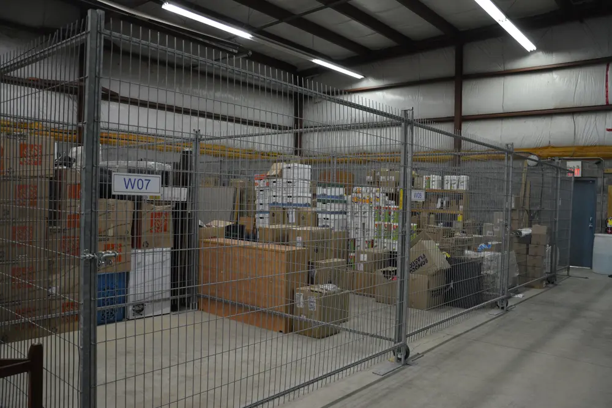

Shur Lok Self Storage
Moving Supplies & Shredding
Get packing materials for the move and a place to drop off documents you no longer need.
Packing and Moving
Moving Supplies
Pick up boxes, packing paper, bubble wrap, tape and dispensers, moving blankets, foam sheets, warehouse pads and stretch wrap. Call the office to check what’s in stock.

Personal and Business Records
Document Shredding
Bring personal or business documents for shredding. The facility uses locked on-site collection containers. The current website lists $1 per pound or $10 per banker’s box. Call to confirm rates and drop-off arrangements.
Ask About Shredding
RV, Boat & Vehicle Storage
Ask about a spot for your car, truck, trailer, boat or motorhome. Rates depend on vehicle length.
See Outdoor Rates